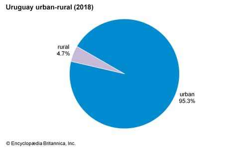
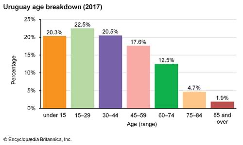
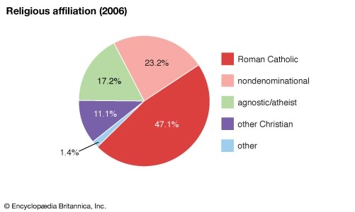

GENTE Y CULTURA
A diferencia de muchas otras áreas de América del Sur, la región que ahora es Uruguay estaba escasamente poblada antes de que los europeos la vieran por primera vez a principios del siglo XVI. Y a lo largo de su historia temprana, Uruguay careció de las cosas con las que soñaban los conquistadores españoles: oro y posibles conversos al cristianismo. El grupo principal que vivía allí eran tribus de indios semidnómadas conocidos colectivamente como los Charrúa. Uruguay también fue el hogar de algunos pequeños asentamientos de indios guaraní y chaná. Durante 200 años después de que fuera visto por primera vez por los europeos, gran parte de Uruguay siguió siendo un pastizal natural habitado solo por ganado salvaje. Al carecer siquiera de un nombre, la zona se denominó simplemente Banda Oriental del Uruguay (la orilla este del río Uruguay). Los uruguayos todavía se conocen como orientales (orientales), y el nombre oficial del país es República Oriental del Uruguay.
GENTE
Cuando Uruguay se independizó en 1828, su territorio nacional se utilizó casi exclusivamente para el pastoreo de ganado en praderas sin vallas; había pocos asentamientos permanentes fuera de Montevideo, Colonia del Sacramento y pueblos a lo largo del río Uruguay. Las tierras de pastoreo a lo largo de la orilla oriental del río constituían una especie de tierra de nadie entre los portugueses brasileños y los españoles argentinos.
Después de la independencia, Uruguay recibió una pequeña afluencia de inmigrantes, principalmente de Italia y España. Entraron por Montevideo y se asentaron en el sur de Uruguay en una zona a lo largo del Río de la Plata y el Río Uruguay. Pero desde principios de la década de 1850, los inmigrantes europeos a la región del Plata se dirigieron principalmente a Argentina y la agricultura en Uruguay permaneció estática. El pastoreo de ganado prosperó en el norte escasamente poblado, pero la agricultura se limitó principalmente al sur. A principios del siglo XX, las líneas ferroviarias y las carreteras se habían extendido por gran parte del país, y el área dedicada a la agricultura había crecido notablemente, sobre todo con la introducción de rebaños de ovejas y pastos encerrados con alambre de púas. Las ovejas superan en número al ganado en el noroeste, pero el ganado es de gran importancia al sur del río Negro. Los ranchos (estancias), algunos de más de 25,000 acres (10,000 hectáreas), todavía son comunes en la región pastoril.
Más de nueve décimas partes de los uruguayos viven ahora en áreas urbanas. Montevideo, el centro urbano dominante del país, tiene prácticamente el monopolio del comercio, la manufactura y los servicios gubernamentales. Otras ciudades mucho más pequeñas incluyen Salto y Paysandú, ambas en el río Uruguay, Artigas y Rivera en el norte, Melo en el este y las ciudades sureñas de Maldonado, Minas y Las Piedras.

TENDENCIAN DEMOGRAFICAS
Uruguay está menos densamente poblado que Argentina y Brasil; sin embargo, las regiones vecinas del sur de Brasil y el noreste de Argentina tienen densidades de población aproximadamente comparables. Las tasas de natalidad y crecimiento poblacional en Uruguay son mucho más bajas que en otros países latinoamericanos. Aproximadamente una quinta parte de la población tiene menos de 15 años, y casi otra quinta parte tiene 60 años o más.

GRUPOS ÉTNICOS, IDIOMA Y RELIGIÓN
Hoy la población de la nación supera los 3 millones. La mayoría de los uruguayos son descendientes de inmigrantes europeos que llegaron al país después de 1870, principalmente de España e Italia, pero también de Inglaterra y Francia. Menos del 10 por ciento de la población es de ascendencia mixta india y europea. Casi toda la población indígena original fue exterminada por españoles y portugueses antes de la independencia uruguaya. Los negros, descendientes de africanos traídos como esclavos para trabajar en los puertos del país, representan aproximadamente el 5 por ciento de la población.
El idioma oficial es el español. En las áreas fronterizas con Brasil, algunas personas hablan una jerga llamada portuñol, una mezcla de portugués (português) y español (español).
Uruguay no tiene religión oficial del estado. Si bien la mayoría de los uruguayos son católicos romanos, el país es muy secular en su vida diaria. La separación de la iglesia y el estado está completa. Un tercio o más de los católicos romanos del país no son religiosos. Uruguay también tiene comunidades de mormones y otros protestantes. La mayoría de los judíos de Uruguay viven en Montevideo. Aunque constituyen una minoría muy pequeña de la población del país, son sin embargo una de las comunidades judías más grandes de América del Sur.

CIUDADES IMPORTANTES
Montevideo, la capital y ciudad más grande, se encuentra a lo largo de la costa sur. Hogar de casi la mitad de la población del país, domina el comercio, la industria, el gobierno, la educación superior y la vida cultural de Uruguay. Todas las demás ciudades tienen menos de una décima parte de la población de Montevideo. Las ciudades más grandes son Salto y Paysandú, ambas cerca de la frontera occidental a lo largo del río Uruguay; Las Piedras, en el sur; y Rivera, en el norte.
LA COMIDA Y COSTUMBRES SOCIALES
La carne de res es fundamental para la cocina uruguaya y el país es uno de los principales consumidores de carne roja per cápita del mundo. Las barbacoas (parrilladas) son omnipresentes. Los alimentos populares incluyen platos de carne, sándwiches de carne (chivitos), riñones y salchichas a la parrilla y pastas. Comúnmente se sirven refrescos, cerveza y vino de producción local, al igual que el clericó, una mezcla de jugo de frutas y vino. Uruguay y Argentina comparten una bebida nacional: el mate (yerba mate), un té que generalmente se bebe de una calabaza con una pajita de metal. Aunque algunos gauchos uruguayos todavía visten pantalones, ponchos y sombreros de ala ancha tradicionales, la mayoría de los uruguayos usan estilos de ropa que también son comunes en Europa y América del Norte.
CULTURA
Culturalmente, Uruguay tiene mucho en común con su vecino Argentina. Las tradiciones gauchas o vaqueras han sido importantes en la configuración del folclore, la música y el arte de ambos países. Las influencias europeas, especialmente españolas e italianas, han predominado, mientras que las tradiciones indias han tenido mucha menos influencia que en otros países sudamericanos.
VIDA CULTURAL
La cultura uruguaya refleja algunas de las mismas características que se encuentran en la vecina Argentina. Ambos países tienen una orientación fuertemente europea (notablemente española e italiana) y, a diferencia de muchos países latinoamericanos, Uruguay está mínimamente influenciado por la cultura indígena. La tradición del gaucho (vaquero, generalmente mestizo) ha sido un elemento importante en el arte y el folclore de ambos países. El teatro y la música de Uruguay tienen una base amplia en términos de apoyo y participación.
FESTIVALES/CELEBRACIONES
- Día de Año Nuevo (1 de enero) La familia y los amigos se reúnen para celebrar el Año Nuevo con fuegos artificiales y fiestas en la víspera de este día.
- Semana Santa / Pascua (marzo o abril) Los cristianos celebran la resurrección de Jesucristo: en Montevideo se realizan grandes desfiles y es uno de los eventos más importantes del año.
- Natalico de Artigas (19 de junio) José Gervasio Artigas es un héroe nacional, conocido como el padre de Uruguay: festivales, desfiles y bailes celebran su vida.
- Día de la Independencia (25 de agosto) Uruguay se independizó de los españoles y portugueses en 1825, ¡las festividades continúan hasta las primeras horas de la mañana!
INSTITUCIONES CULTURALES
Montevideo, el corazón cultural del país, alberga las principales instituciones culturales de Uruguay, incluida la Biblioteca Nacional y los museos nacionales de historia, antropología, historia natural y arte. Varios museos regionales, como el Museo del Indio y el Gaucho en Tacuarembó, tienen colecciones históricas bien conservadas. El gobierno apoya a dos orquestas sinfónicas, el Teatro Nacional y las escuelas de artes dramáticas, bellas artes y ballet. Grupos dramáticos y musicales privados también actúan en Montevideo y otras ciudades.
DEPORTES Y RECREACIÓN
El fútbol (soccer) es una obsesión nacional en Uruguay, y el país tiene una de las historias con más historia en el juego. Uruguay compitió por primera vez en los Juegos Olímpicos de 1924 en París, donde ganó la medalla de oro en fútbol. En 1930, el estadio Centenario de Montevideo fue sede de la Copa del Mundo inaugural, que fue ganada por Uruguay. En 1950 el país derrotó a Brasil en Río de Janeiro para convertirse en uno de los pocos equipos en ganar más de una Copa. Uruguay ha capturado más títulos mundiales que cualquier otra nación y sus jugadores son reclutados en todo el mundo. Otros deportes populares para los espectadores incluyen baloncesto, rugby, boxeo y carreras de caballos, este último notablemente en Las Piedras. También se disfruta mucho del tenis, el ciclismo y la pesca. El carnaval, la fiesta más importante, se celebra durante la semana anterior a la Cuaresma.
MEDIOS Y PUBLICACIÓN
La mayoría de los diarios uruguayos se publican en Montevideo y varios tienen circulación nacional. Muchos de los principales diarios pertenecen a los principales partidos políticos o están afiliados a ellos. El Día fue el periódico más prestigioso del país hasta su desaparición a principios de la década de 1990; fue fundada en 1886 por el líder colorado y (más tarde) presidente José Batlle y Ordóñez. El País, el periódico del rival Partido Blanco, es el de mayor circulación. El Observador Económico es un respetado diario independiente y muchos consideran que el semanario Búsqueda es el mejor diario del país. Dos revistas de moda, Tres y Posdata, han elevado el nivel de sofisticación de los medios impresos.
En Uruguay operan estaciones de radio y televisión tanto gubernamentales como privadas. La radiodifusión comenzó como un servicio diario en 1922 y la primera estación de televisión comenzó a transmitir en 1956. El uso de Internet ha crecido rápidamente desde mediados de la década de 1990.
Las Artes
LITERATURA
José Enrique Rodó, modernista, es considerado la figura literaria más significativa de Uruguay. Su libro Ariel (1900), que enfatiza la importancia de defender los valores espirituales sobre los materialistas, así como de resistir el dominio cultural de Europa y Estados Unidos, sigue influyendo en los escritores jóvenes. Entre los dramaturgos latinoamericanos destacan Florencio Sánchez; sus obras, escritas a principios del siglo XX y que tratan de problemas sociales contemporáneos, todavía se representan. Aproximadamente de la misma época y algo más tarde llegó la poesía romántica de Juan Zorrilla de San Martín, Juana de Ibarbourou y Delmira Agustini y los cuentos de Horacio Quiroga. Las historias psicológicas de Juan Carlos Onetti han merecido elogios de la crítica generalizada, al igual que los escritos de Mario Benedetti. El escritor contemporáneo más conocido de Uruguay es Eduardo H. Galeano, autor de Las venas abiertas de América Latina (1971; Las venas abiertas de América Latina) y la trilogía Memoria del fuego (1982-1987; Memoria del fuego). Los uruguayos de muchas clases y procedencias disfrutan leyendo historietas, libros de historietas que a menudo mezclan el amor y la fantasía con una crítica social apenas velada.
MUSICA
La música folclórica y popular de Uruguay comparte con Argentina no solo sus raíces gauchas sino también el tango, un estilo musical y de baile que se originó en Argentina. Uno de los tangos más famosos, “La cumparsita” (1917), fue escrito por el compositor uruguayo Gerardo Matos Rodríguez. El candombe es una danza folclórica que se realiza en el Carnaval principalmente por uruguayos de ascendencia africana. La guitarra es el instrumento musical preferido; y, en un concurso popular llamado la payada, dos cantantes, cada uno con una guitarra, se turnan para improvisar versos al mismo tono. Numerosas estaciones de radio y eventos musicales reflejan la popularidad de la música rock (principalmente importada de los Estados Unidos y Europa, aunque algunas bandas uruguayas disfrutan de una gran cantidad de seguidores) y los géneros caribeños conocidos como música tropical (“música tropical”). La música clásica temprana en Uruguay mostró una fuerte influencia española e italiana, pero desde el siglo XX varios compositores de música clásica, incluidos Eduardo Fabini, Vicente Ascone y Héctor Tosar, han hecho uso de los modismos musicales latinoamericanos.
Algunos ejemplos para escuchar
| Por: | Cancion: |
|---|---|
| Gerardo Matos Rodrígez | La Cumparsita |
| Ruben Rada | Cuerda de Tambores, Candombe |
| Abel Soria y Héctor Umpiérrez | Payada |
| Lucas Sugo | Se cae de maduro |
PINTURA
El pintor del siglo XIX Juan Manuel Blanes, cuyas obras describen hechos históricos, fue el primer artista uruguayo en obtener un reconocimiento generalizado. El pintor postimpresionista Pedro Figari alcanzó renombre internacional por sus estudios al pastel de temas en Montevideo y el campo. Combinando elementos de arte y naturaleza, el trabajo del arquitecto paisajista Leandro Silva Delgado también ha ganado prominencia internacional.
CINE
Uruguay tiene una industria cinematográfica pequeña pero en crecimiento, y películas como Los días con Ana (2000: “Días con Ana”) de Marcelo Bertalmío han obtenido reconocimientos internacionales. Nuevos trabajos se destacan en el Festival Internacional de Cine de Uruguay que se realiza en Montevideo.